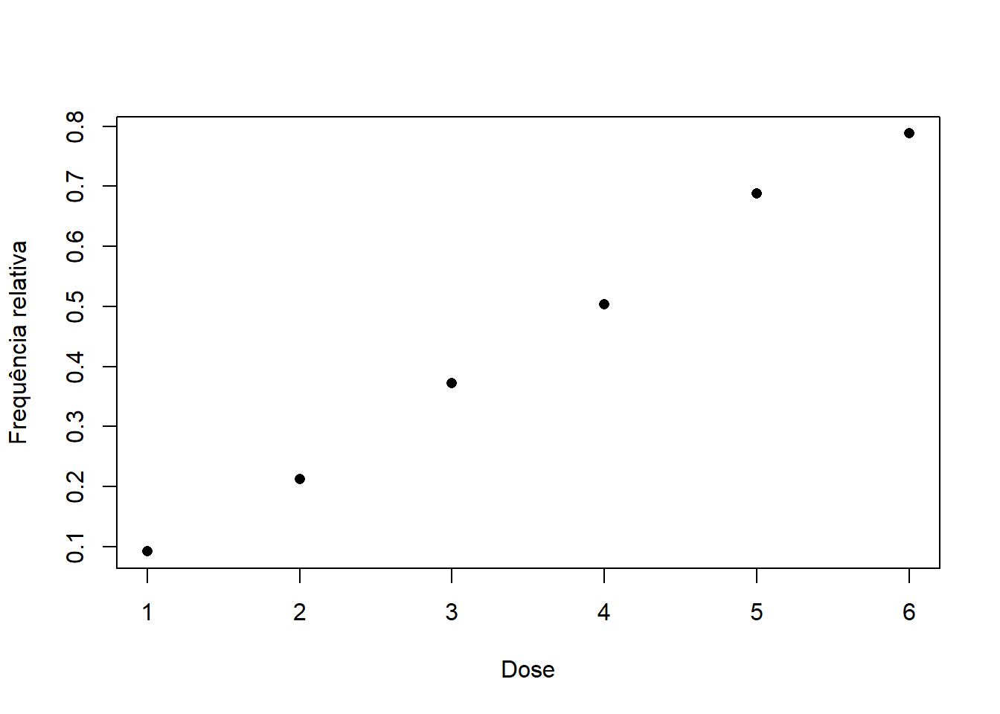
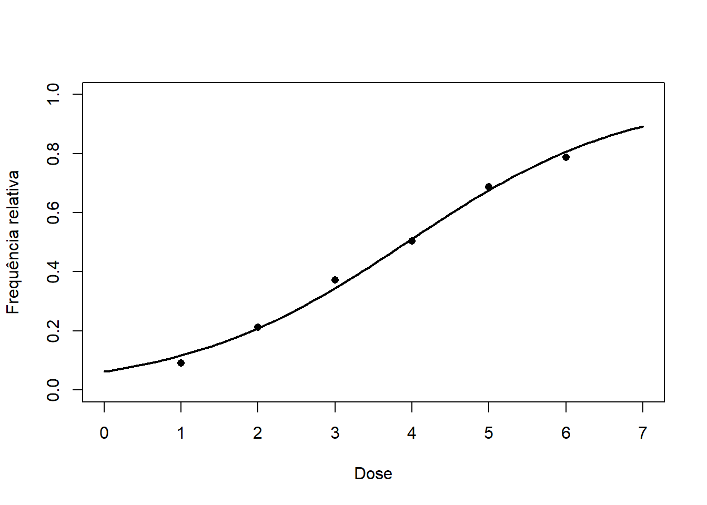

13 Regressão logística
13.1 Introdução
O seguinte exemplo, retirado do livro Applied Linear Statistical Models by Kutner, Nachtsheim, Neter, & Li, apresenta o número de insetos mortos após a exposição de certa toxina em diferentes doses.
| Dose | Insetos expostos | Mortes |
|---|---|---|
| 1 | 250 | 28 |
| 2 | 250 | 53 |
| 3 | 250 | 93 |
| 4 | 250 | 126 |
| 5 | 250 | 172 |
| 6 | 250 | 197 |
Observe que o aumento da dose implica no aumento do número de mortes. Estamos interessados em modelar a probabildade de um inseto morrer ao ser exposto por certa dose desta toxina. Podemos estimar essa probabilidade através da frequência relativa, que pode ser conferida no gráfico abaixo.
Seja \(Y_i=1\) se o \(i\)-ésimo inseto morreu após a exposição da dose \(x_i\) e \(Y_i=0\) em caso contrário. Teremos então que \(Y_i|x_i\sim\hbox{Bernoulli}(p(x_i))\), uma vez que a letalidade depende da dose. Como \[E(Y_i|x_i)=p(x_i)\] a estimação da probabilidade da letalidade da dose é um problema de regressão. Contudo, pode-se perceber que a relação entre \(y_i\) e \(x_i\) não pode ser linear, uma vez que \(p(x)\) está restrito ao intervalo (0,1) para todo valor de \(x\). Podemos reparametrizar o problema, de modo que o novo espaço paramétrico pertença a reta. A pametrização usual utiliza função logit:
\[\eta=\hbox{logit}(p)=\log\left(\frac{p}{1-p}\right),\] o que implica em \[p=\frac{e^\eta}{1+e^\eta}.\]
A principal vantagem desta nova parametrização estão no fato de que, em geral, \[\eta_i = \beta_0+\beta_1 x_i=\underbrace{(1\;\;x_i)}_{\boldsymbol{x}'_i}\underbrace{\left(\begin{array}{c}\beta_0\\\beta_1 \end{array}\right)}_{\boldsymbol{\beta}}=\boldsymbol{x}'_i\boldsymbol{\beta}.\]
Como os parâmetros são os mesmos do modelo de regressão linear, podemos utilizar as mesmas priori discutidas anteriormente para este novo modelo.
13.2 O model de regressão logística
Seja \(Y_1,\ldots,Y_n\) uma amostra de variáveis independentes com \(Y_i|\boldsymbol{x}\sim\hbox{Bernoulli}(p_i)\) onde \[\hbox{logit}(p_i)=\boldsymbol{x}'_i\boldsymbol{\beta},\] e \(\boldsymbol{\beta}\) e \(\boldsymbol{x}_i\) são vetores de comprimento \(k\). A função de verossimilhança para este modelo é dada por \[L(\boldsymbol{\beta})=\prod_{i=1}^n p_i^{y_i}(1-p_i)^{1-y_i}\]
Como priori, considere inicalmente que:
\[\begin{align}\boldsymbol{\beta}|\phi &\sim\hbox{Normal}(\textbf{0}_k,\phi^{-1}(\boldsymbol{X}'\boldsymbol{X})^{-1} )\\ \phi&\sim \hbox{Gama}(\nu/2,b/2) \end{align}\] o que implica em \[\boldsymbol{\beta}\sim t_{\nu}(\textbf{0}_k, \frac{b}{\nu}\left(\boldsymbol{X}'\boldsymbol{X})^{-1}\right)\] A posteriori é dada por
\[f(\boldsymbol{\beta}|\boldsymbol{y},\boldsymbol{x})\propto L(\boldsymbol{\beta})f(\boldsymbol{\beta})\]
Podemos então simular desta posteriori através do algoritmo Metropolis, utilizando como proposta a distribuição aproximada do estimador de máxima verossimilhança para \(\boldsymbol{\beta}\).
Exemplo
Vamos ajustaro o modelo de regressão logística para os dados da introdução.
require(mvtnorm)Carregando pacotes exigidos: mvtnorm# hperparâmetros
nu = b = 3
# matriz de regressoras
dose <- sapply(1:6, function(z) rep(z,250))
dose <- matrix( dose, ncol = 1)
X <- cbind(1, dose)
# vetor de respostas
mortes <- c(23, 53, 93, 126, 172, 197)
y <- sapply( mortes, function(z) c(rep(1,z),rep(0,250-z) ) )
y <- matrix(y, ncol = 1)
# obtendo as estimativas de máxima verossimilhança e o informação de Fisher
mod <- glm( y~X-1, family=binomial( link = 'logit'))
emv <- mod$coefficients
matriz_escala <- (summary(mod))$cov.unscaled
# implementando a função log-posteriori
Sigma <- solve(t(X)%*%X)
logPost <- function(beta){
mu = X%*%matrix(beta, ncol = 1)
p = exp(mu)/(1+exp((mu)))
log_vero = sum(y*log(p)+(1-y)*log(1-p))
log_prio = dmvt(beta, sigma = (b/nu)*Sigma, df = nu)
log_vero + log_prio
}
# simulando da posteriori
B = 50000
beta_sim <- array(NA_real_, c(B+1, length(emv)))
beta_sim[1,] <- emv
for(i in 1:B){
beta_cand <- rmvnorm(1, emv, matriz_escala)
alpha = exp(logPost(beta_cand) - logPost(beta_sim[i,]))
u = runif(1)
ifelse( u <alpha, beta_sim[i+1,] <- beta_cand, beta_sim[i+1,] <- beta_sim[i,])
}
beta_post <- beta_sim[ seq(B/2, B, 15), ]As estimativas para \(\boldsymbol{\beta}\) são
colMeans(beta_post)[1] -2.7178116 0.6897782O intervalo de credibilidade de 95% para \(\beta_1\), dado abaixo, apresenta exidências de que \(\beta_1>1\)
quantile(beta_post[,2], c(.025, .975)) 2.5% 97.5%
0.6320924 0.7429332 Ao testat \(H:\beta_1>0\), temos evidências decisivas sobre o efeito positivo no aumento da dosagem na probabilidade de morte.
mean(beta_post[,2]>0)[1] 1Abaixo, apresentamos o gráfico do início da seção com a curva \[\hat{p}(x)=\frac{e^{-2,71+0,689x}}{1+e^{-2,71+0,689x}}\]

13.3 Exercícios
13.3.1 PIMA revisitado
Vimos anteriormente diagnósticas e de saúde de 768 mulheres da tribo Pima, que vivem perto de Phoenix, Arizona, EUA. O objetivo original do estudo era prever o início do diabetes (variável Outcome) considerando as seguintes regressoras:
Glucose: Concentração de glicose no plasma a 2 horas em um teste de tolerância à glicose oral.
BloodPressure: Pressão diastólica sanguínea (mm Hg).
SkinThickness: Espessura da dobra da pele do tríceps (mm).
Insulin: Insulina sérica de 2 horas (mu U/ml).
BMI: Índice de Massa Corporal (peso em kg / (altura em m)^2).
DiabetesPedigreeFunction: Função pedigree de diabetes (um histórico familiar).
Age: Idade (anos).
Abaixo, apresentamos novamente como obter o banco de dados.
require(gsheet)Carregando pacotes exigidos: gsheeturl <- 'https://docs.google.com/spreadsheets/d/1TFvnPYCZ9CwUBs8P3FM8OMAxSmDsCktmu6h2k-OR7z8/edit?usp=sharing'
dados <- data.frame( gsheet2tbl(url))
head(dados) Pregnancies Glucose BloodPressure SkinThickness Insulin BMI
1 6 148 72 35 0 33.6
2 1 85 66 29 0 26.6
3 8 183 64 0 0 23.3
4 1 89 66 23 94 28.1
5 0 137 40 35 168 43.1
6 5 116 74 0 0 25.6
DiabetesPedigreeFunction Age Outcome
1 627.000 50 1
2 351.000 31 0
3 672.000 32 1
4 167.000 21 0
5 2.288 33 1
6 201.000 30 0Através de um modelo de regressão logística, encontre quais são as variaáveis adequadas para o problema e estime a curva logit.